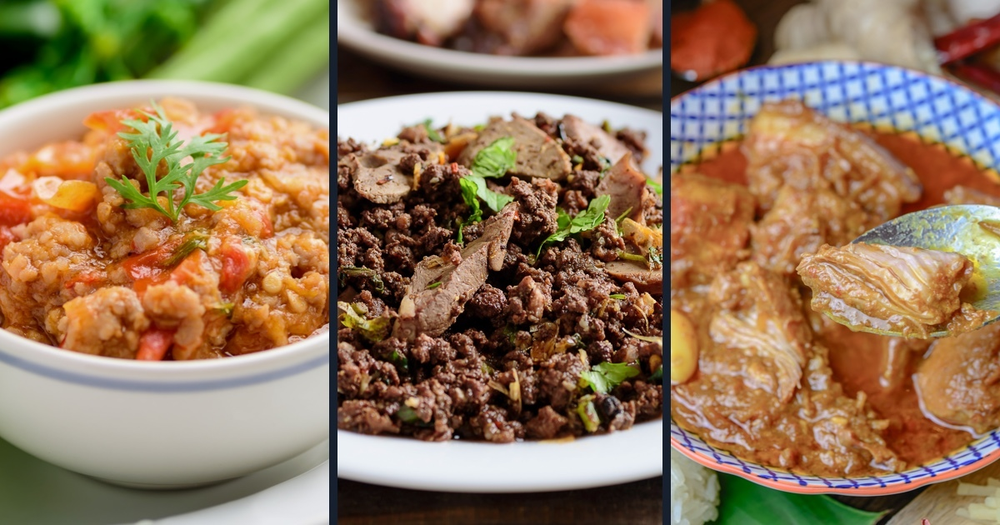
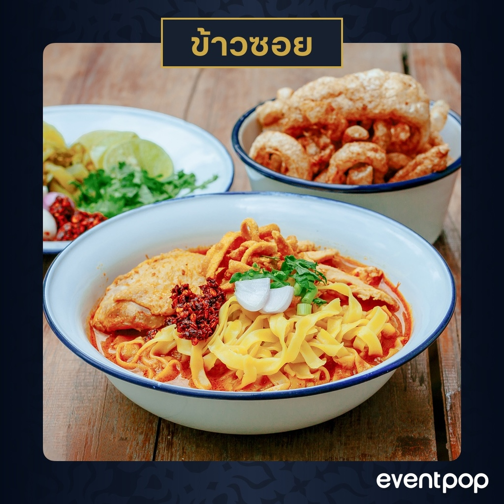
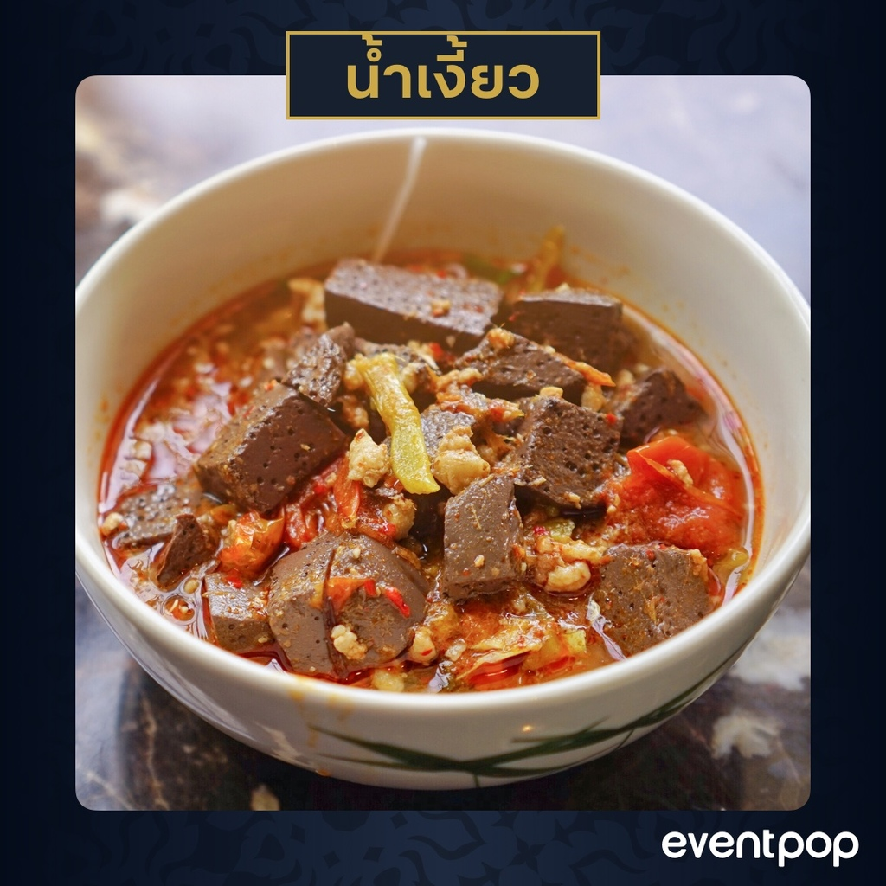
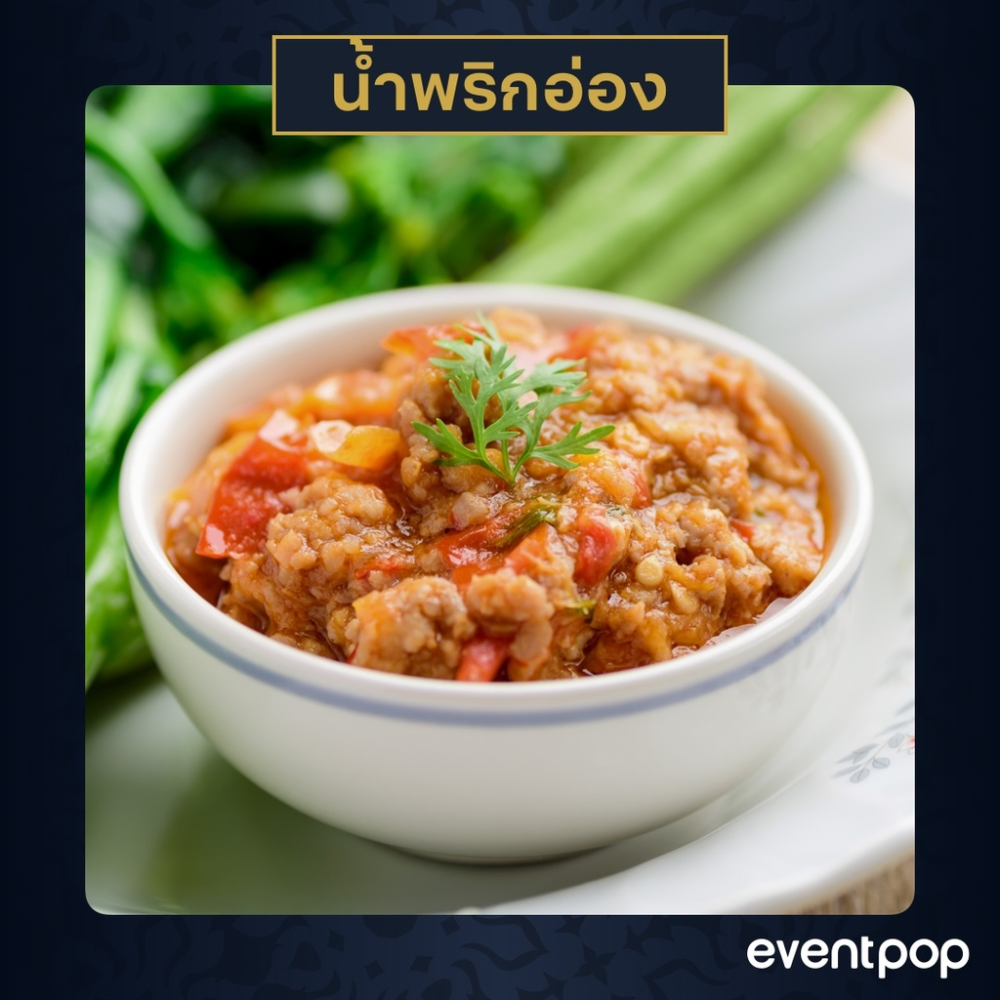
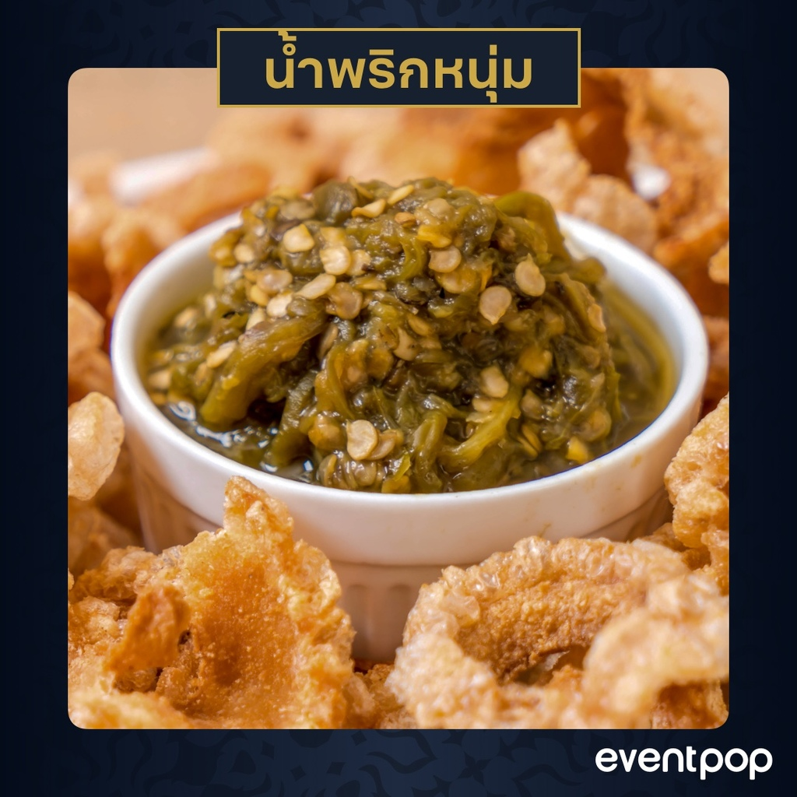
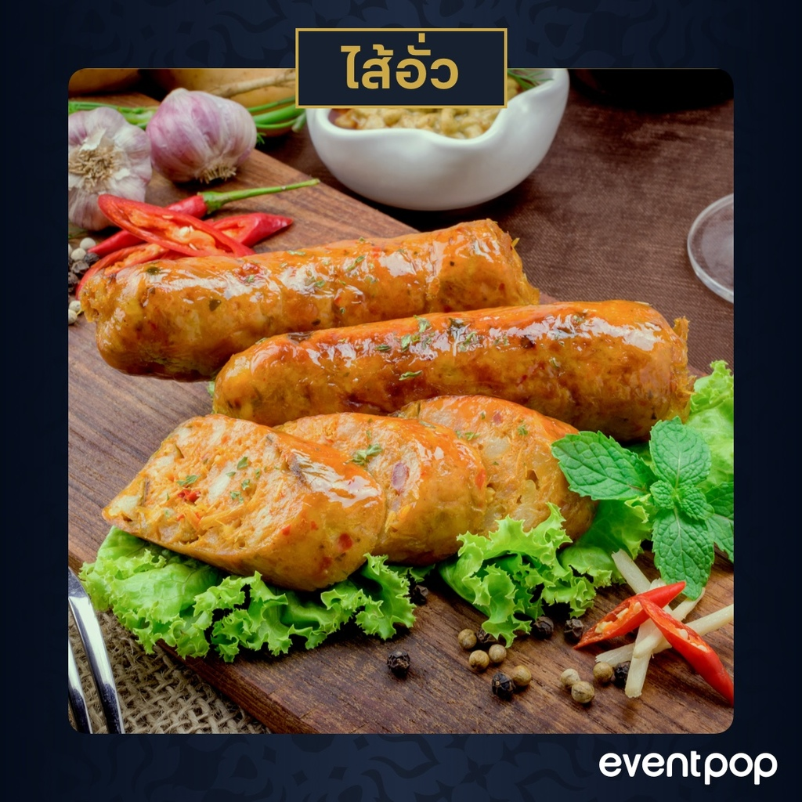
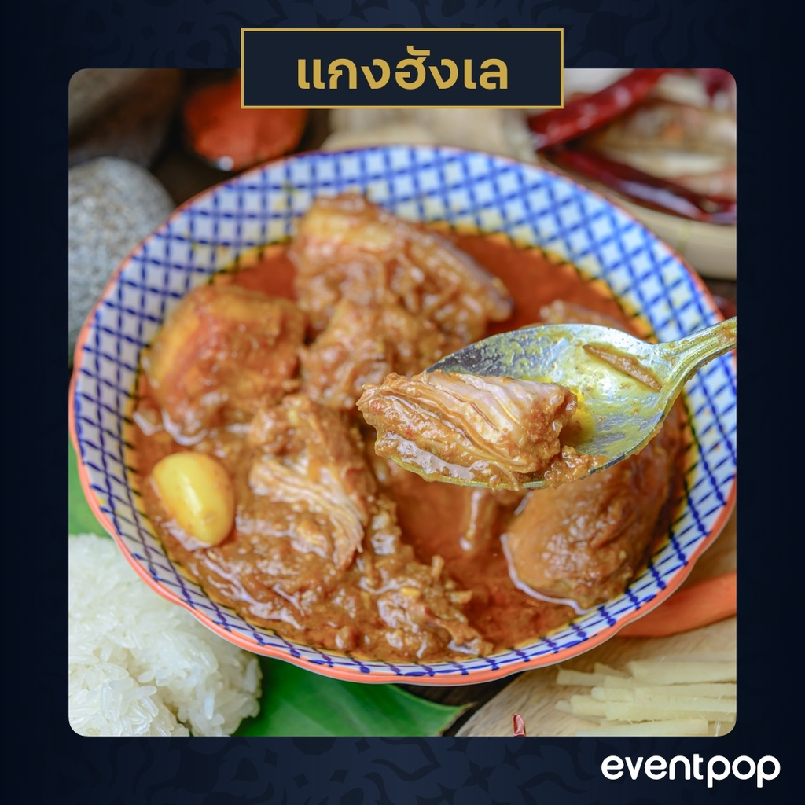
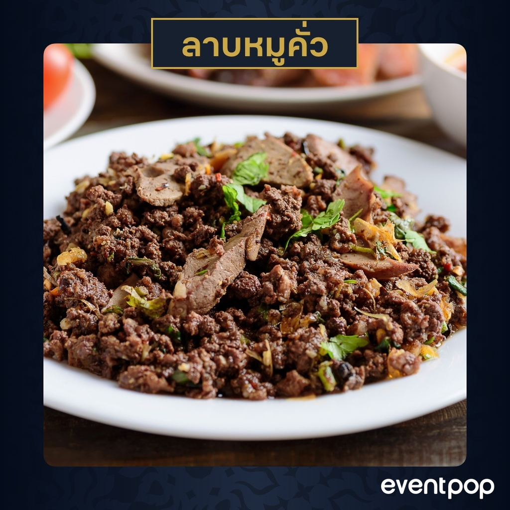

| "เชียงใหม่" นอกจากจะมีสถานที่ท่องเที่ยวสวยงามมากมายให้เที่ยวได้แบบไม่ซ้ำแล้ว อาหารการกินก็อุดมสมบูรณ์ไม่แพ้กัน วันนี้ทางเราจะขอพาไปลำกับอาหารพื้นเมืองเชียงใหม่แบบชาวเหนือแต๊ ๆ กับอาหารเหนือ 7 อย่างที่ไม่ควรพลาดถ้าไปเยือนเชียงใหม่ |
| 1.ข้าวซอย |
|  |
|
1. ข้าวซอย
ถ้าไม่ได้กินเมนูโด่งดังอย่างข้าวซอย ก็คงพูดไม่ได้เต็มปากว่ามาถึงเชียงใหม่ ข้าวซอยถือเป็นอาหารเมืองเหนือที่หลาย ๆ คนหลงรัก มาเชียงใหม่ทีไรก็ต้องหาร้านข้าวซอยกินตลอด ด้วยความนุ่มของเนื้อ ความหนึบของเส้นข้าวซอย และความหวานมันของน้ำแกง ทำให้ใคร ๆ ก็ต้องหลงรักเมนูนี้แบบเทใจให้ |
| 2.น้ำเงี้ยว |
|  |
|
2. น้ำเงี้ยว
นึกถึงเมนูอาหารเหนือที่เชียงใหม่ก็ห้ามพลาดเมนูน้ำเงี้ยวอย่างแน่นอน โดยเฉพาะเมนูขนมจีนน้ำเงี้ยวที่ใครต่อใครได้ทานก็ตกหลุมรักไปตาม ๆ กัน เพราะในน้ำเงี้ยวมีทั้งเนื้อหมูนุ่ม ๆ เลือดไก่ต้มพูน ๆ น้ำแกงข้น ๆ และที่ขาดไม่ได้ก็คือดอกงิ้ว แค่จานเดียวก็ได้รสสัมผัสถึงกลิ่นไออาหารเหนือแท้ ๆ |
| 3.น้ำพริกอ่อง |
|  |
|
3. น้ำพริกอ่อง
น้ำพริกอ่องเป็นน้ำพริกพื้นบ้านของภาคเหนือ ลักษณะเด่นของน้ำพริกอ่อง คือ จะมีสีส้มของสีมะเขือเทศและพริกแห้ง ที่เคี่ยวจนเป็นน้ำขลุกขลิก มีน้ำมันลอยหน้าเล็กน้อย นิยมรับประทานกับผักสดหรือผักต้มก็ได้ และที่นิยมรับประทานร่วมกันอีกอย่างหนึ่งคือ แคบหมู ซึ่งจะทำให้ได้อรรถรสในการกินเพิ่มมากขึ้น |
| 4.น้ำพริกหนุ่ม |
|  |
|
4. น้ำพริกหนุ่ม
ถ้าจะซื้อของฝากจากเชียงใหม่ก็คงขาดไม่ได้กับเมนูน้ำพริกหนุ่ม หนึ่งในอาหารพื้นบ้านชื่อดังของทางเหนือที่เปรียบเสมือนเป็นตัวแทนของชาวเชียงใหม่ เกิดจากการนำเอา "พริกหนุ่ม" มาย่างไฟจนได้ที่ แล้วจึงนำมาตำรวมกับเครื่องเคราหลากชนิด อาทิ หอมแดง กระเทียม ปลาแห้ง ปลาร้า เกลือ เป็นต้น |
| 5.ใส่อั่ว |
|  |
|
5. ไส้อั่ว
หนึ่งในอาหารพื้นเมืองและของฝากยอดนิยมทางภาคเหนือของประเทศไทย "อั่ว" หมายถึง กรอก หรือ ยัด ปกตินิยมใช้เนื้อหมู มันหมู นำมาปรุงรส ด้วยเครื่องเทศ โขลกละเอียด คลุกให้เข้ากัน แล้วกรอกลงไปในไส้อ่อนของหมูที่เกลาจนบางแล้ว บิดให้เป็นท่อนพอประมาณ จากนั้นนำไปย่างให้เกรียม จะทำให้มีกลิ่นหอมชวนรับประทานที่สุด |
| 6.แกงฮังเล |
|  |
|
6. แกงฮังเล
อาหารขึ้นชื่อของชาวเหนือล้านนา สุดยอดเมนูเด็ด แกงฮังเล หรือ แกงฮินเล เป็นอาหารที่มีรสชาติเค็ม-เปรี้ยว มีต้นกำเนิดมาจากประเทศพม่า ชาวไทยภาคเหนือและแคว้นสิบสองปันนา ประเทศจีนนิยมรับประทานกัน มาเที่ยวภาคเหนือต้องได้กินสักครั้ง |
| 7.ลาบหมูคั่ว |
|  |
|
7. ลาบหมูคั่ว
ลาบเป็นอาหารพื้นบ้านอีกอย่างหนึ่งของคนเหนือ เป็นอาหารที่นิยมทำกินกันในโอกาสพิเศษหรืองานเลี้ยงหรือในเทศกาลต่าง ๆ ส่วนประกอบหลักของลาบหมู คือเนื้อหมูสด และหัวใจสำคัญที่สุดคือ "พริกลาบ" ที่ส่งกลิ่นหอมจากเครื่องเทศหลากชนิด หรือจะเป็นลาบสุกที่เสิรมรสเผ็ดร้อนได้อย่างถูกลิ้นชาวเหนือ |